Suplai konsentrat aktif super pekat kelarutan 1N ionik murni siap pasang merek Anda sendiri (white-label). Solusi hemat ratusan juta untuk pemilik kebun luas, distributor kios, dan pemilik brand agribisnis.
White Label
Siap pasang merek Anda
Bahan F1 Lab
Konsentrat super pekat
Pabrik Kebun
Setup on-site kebun
Custom Formula
Request spesifikasi hara

Didesain khusus untuk memangkas margin perantara yang membuat harga pupuk pabrikan mahal.
Punya lahan 50 hingga ribuan hektar? Jangan habiskan ratusan juta untuk pupuk tabur pabrikan mahal. Buat larutan nutrisi sendiri di kebun dengan konsentrat bahan aktif F1 kami.
Ingin memiliki produk pupuk dengan merek toko sendiri yang tidak bisa dipermainkan harganya oleh kompetitor? Kami buatkan dari formula hingga kemasannya siap jual.
Ingin jualan pupuk di Shopee, Tokopedia, TikTok Shop, atau iklan Meta? Kami siapkan formula pekat berkualitas lab yang terbukti menghasilkan testimoni repeat order tinggi.
Tersedia dalam kemasan jerigen putih polos (white-label) siap pasang stiker merek Anda sendiri.
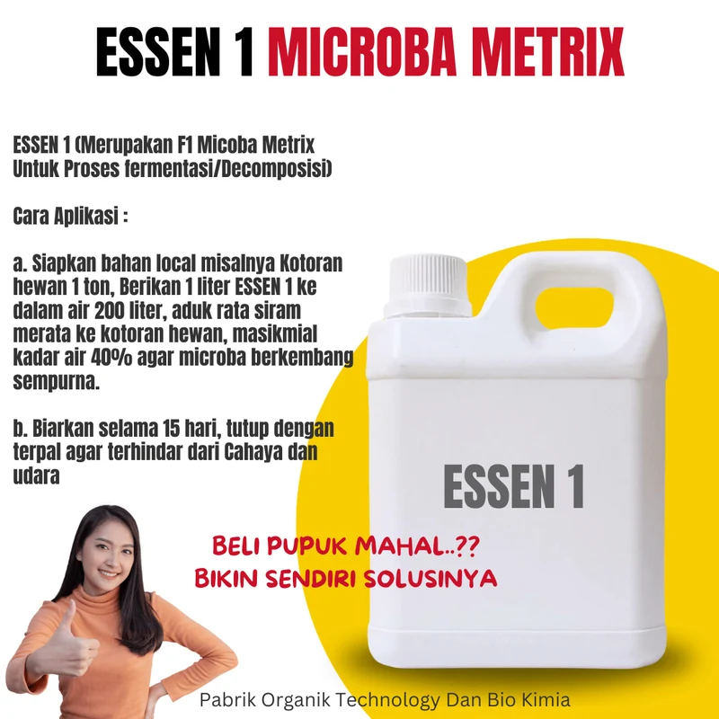
F1 Microba Metrix murni biang dekomposisi & fermentasi cepat kotoran hewan dan limbah organik.
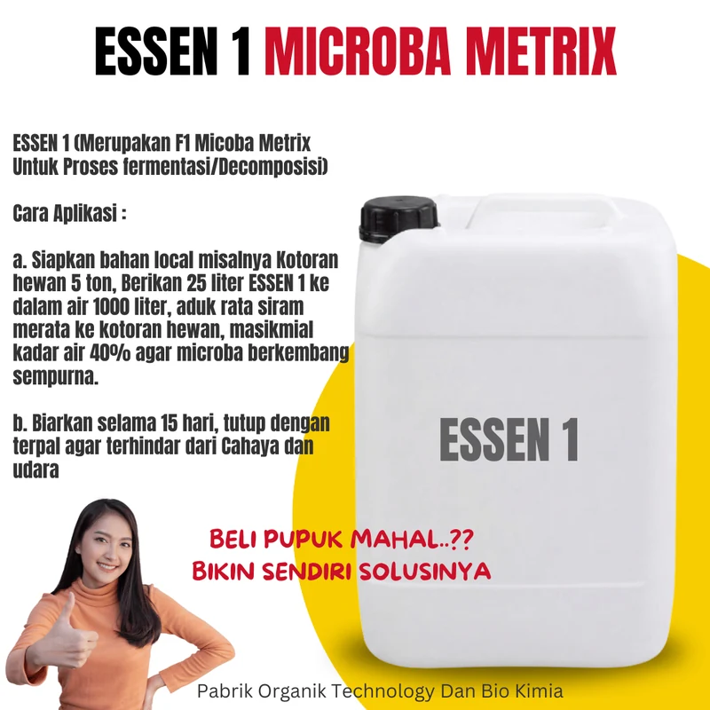
F1 Microba Metrix konsentrat tinggi kemasan industri 25 Liter untuk fermentasi massal 5 ton kotoran hewan.
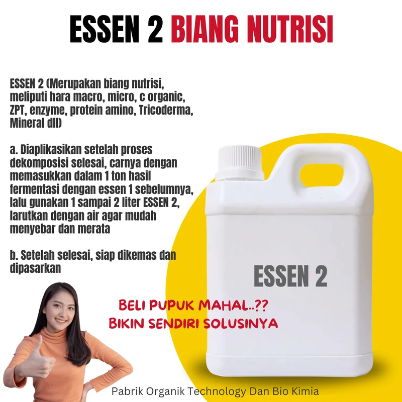
Biang nutrisi hara makro, mikro, C-Organik, ZPT hormon, enzim, protein amino, Trichoderma, dan mineral.
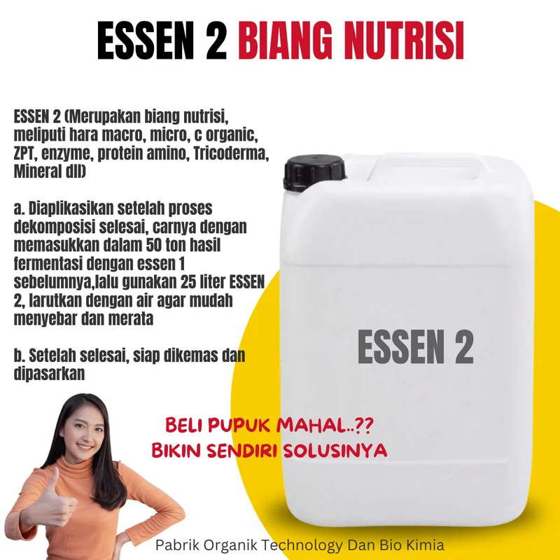
Biang nutrisi pekat kemasan jumbo 25 Liter untuk formulasi pupuk organik/hayati kapasitas industri 50 ton.
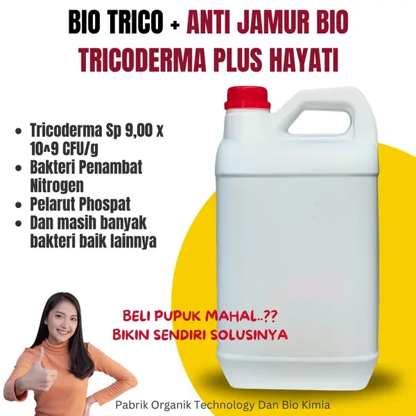
Konsorsium mikroba bio-antagonis murni hasil isolasi laboratorium InterFarm.
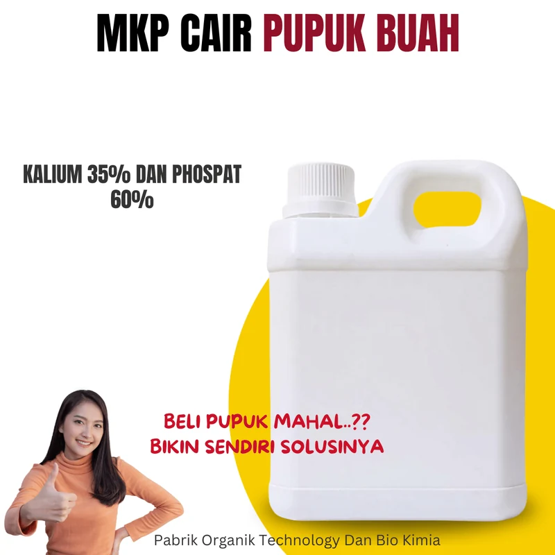
Formulasi ionik fosfat dan kalium pekat murni siap serap tanpa endapan residu.
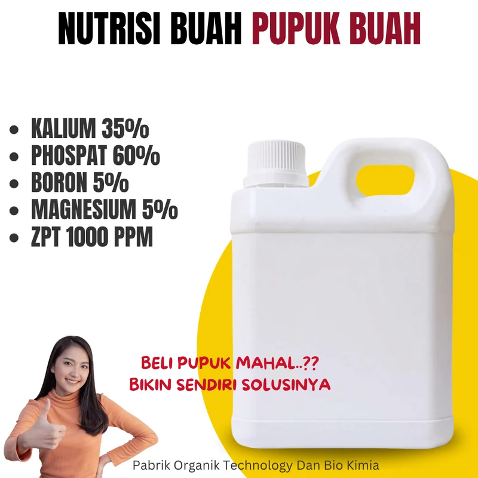
Formula ionik pekat pemacu pembungaan serentak dan pengisi bobot buah dengan ZPT 1000 PPM.
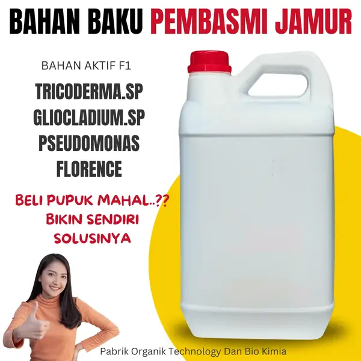
Formula bio-fungisida sistemik hayati aktif perusak dinding sel cendawan patogen.
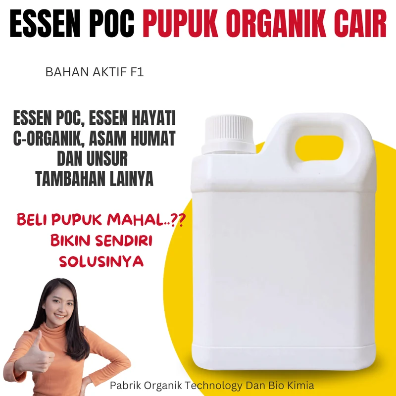
Biang nutrisi C-Organik konsentrat tinggi untuk bahan baku pupuk cair berbagai tanaman.
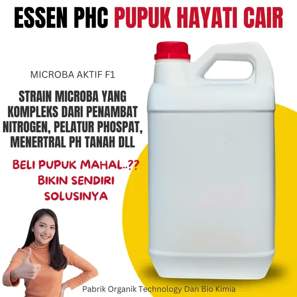
Inokulan bakteri endofit dan rhizosfer penambat N dan pelarut hara tanah masam.
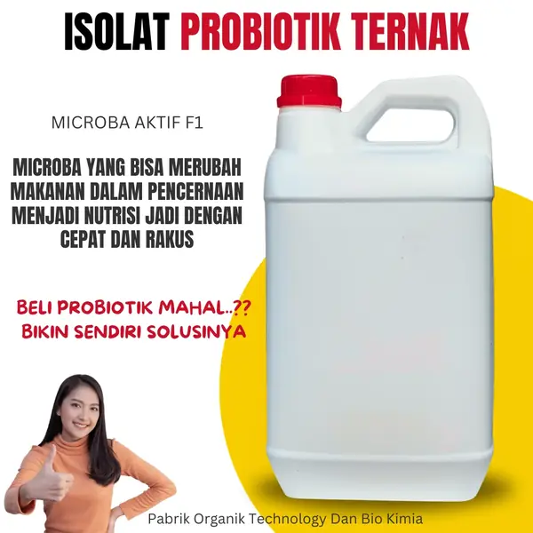
Kultur murni mikroba fermentatif probiotik untuk suplemen pakan dan sanitasi kolam/kandang.
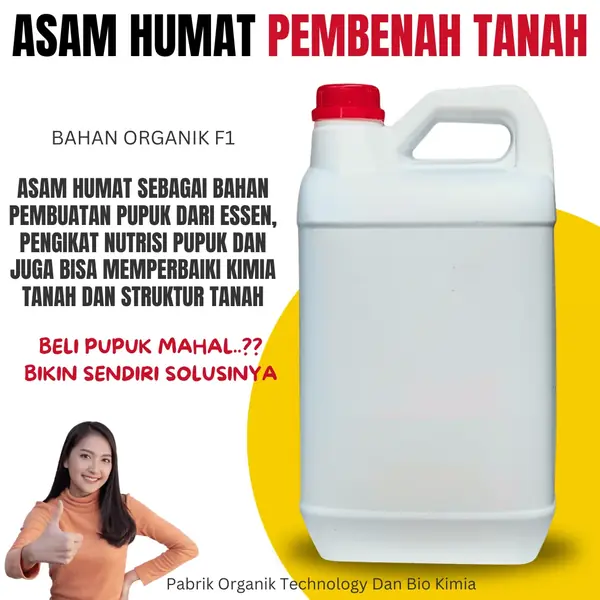
Ekstrak murni leonardite bermutu tinggi untuk pemulih struktur biologi dan kimia tanah.
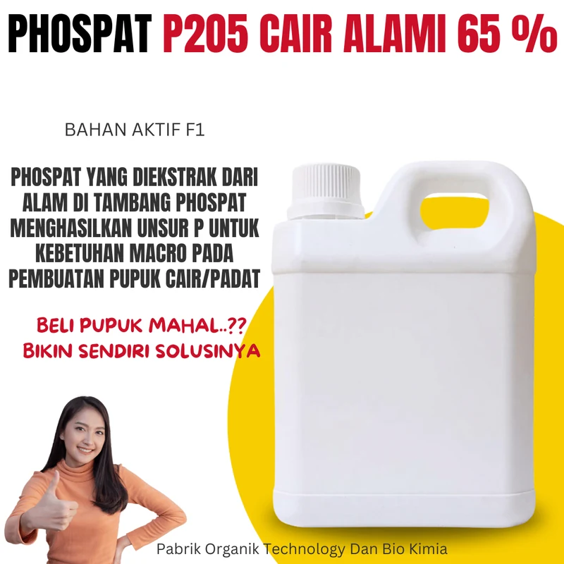
Ekstraksi batu fosfat alam murni menjadi bentuk cair ionik berenergi tinggi.
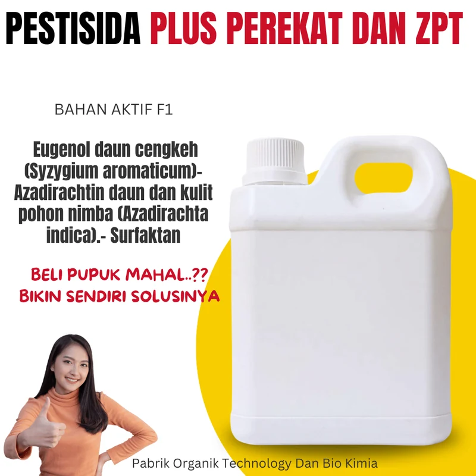
Bahan aktif nabati botani multi-aksi dengan surfaktan perekat anti hujan.
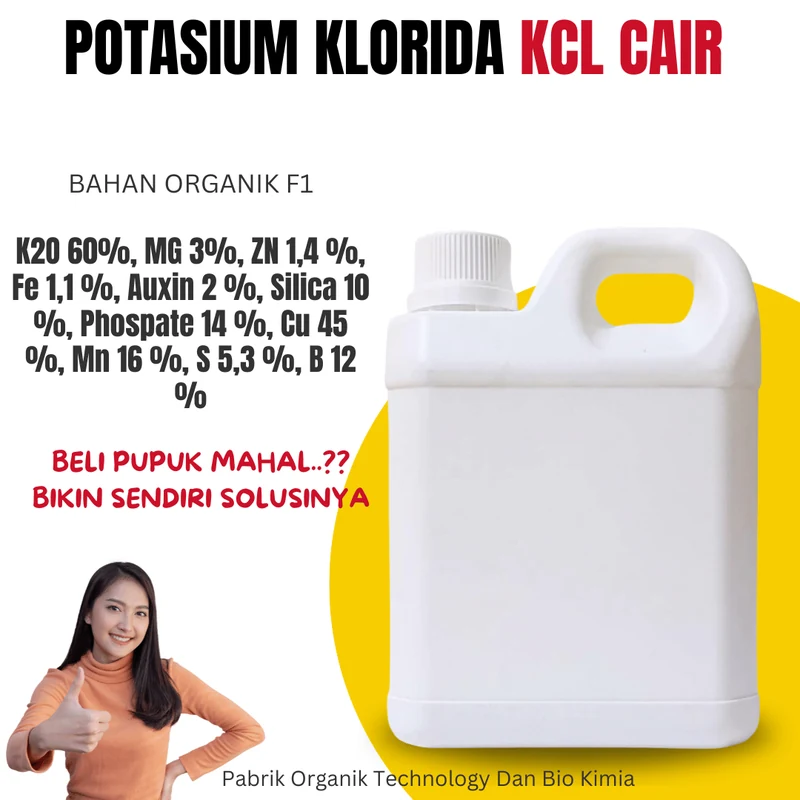
Kalium konsentrasi tinggi formula cair bebas klor berlebih untuk pemadatan panen.
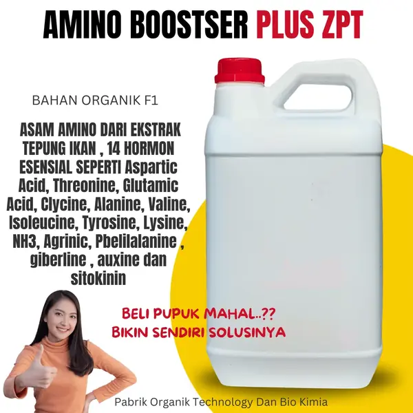
Hidrolisat protein hewani laut dengan 14 spektrum rantai peptida dan fitohormon aktif.
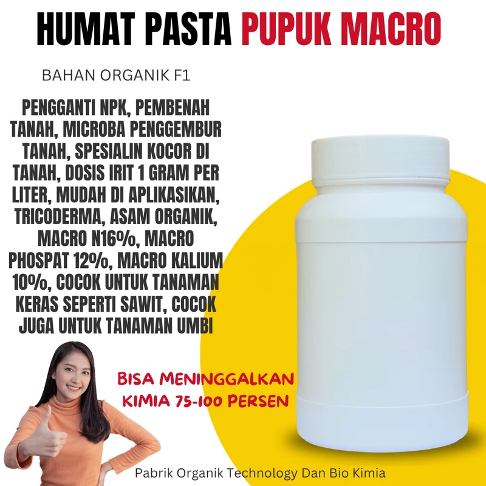
Tekstur pasta kental bio-kimia organik pengganti pupuk kimia tabur sintetis.
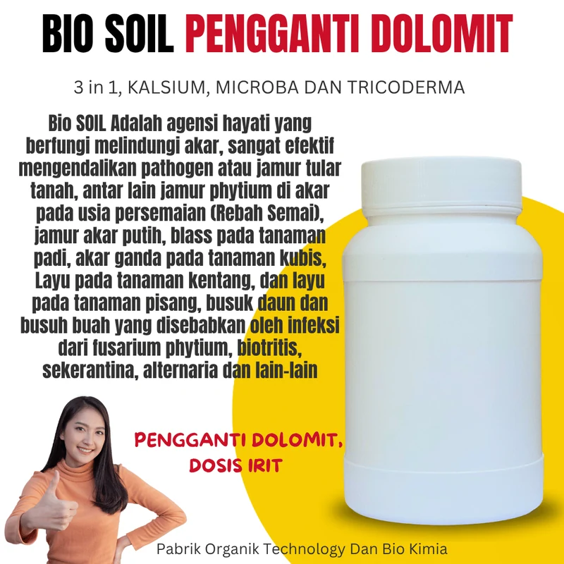
Kalsium aktif cair plus inokulan agens hayati pencegah penyakit layu dan rebah batang.
Menampilkan 1 - 6 dari 18 prototipe
Transparansi pengujian mutu, pemurnian bahan aktif, dan formulasi laboratorium kimia & hayati langsung dari fasilitas InterFarm.
Uji mikrobiologi keaktifan konsorsium bakteri penambat nitrogen, pelarut phospat, dan mikroba hayati dalam Essen POC F1.
Uji mikrobiologi keaktifan konsorsium bakteri penambat nitrogen, pelarut phospat, dan mikroba hayati dalam Essen POC F1.
Pemisahan asam humat murni leonardite menghasilkan kepekatan ionik 1N larut sempurna tanpa residu endapan.
Isolasi 14 rantai asam amino esensial dan hormon ZPT alami siap serap tanaman untuk pemicu sel anakan & buah.
Pembentukan matriks sponge gel pengikat air dan pelarut residu pupuk kimia keras di piringan tanah.
Ekstraksi Eugenol cengkeh, Azadirachtin mimba, dan surfaktan perekat anti hujan ramah lingkungan.
Tim riset laboratorium InterFarm siap memformulasikan bahan aktif pupuk cair, pasta, atau biang kocor custom sesuai komoditas target kebun Anda dengan efisiensi biaya maksimal.
Dari konsep hingga produk jadi berizin edar siap jual di pasaran.
Diskusikan target komoditas, jenis pupuk (cair/pasta/padat), dan volume produksi yang diinginkan.
Kami kirimkan sampel formula F1 untuk Anda uji langsung kualitas dan tingkat kelarutannya.
Penentuan desain label kemasan, pemilihan jenis jerigen/pail, dan pendampingan legalitas.
Produksi massal tepat waktu dan pengiriman langsung ke gudang atau perkebunan Anda.